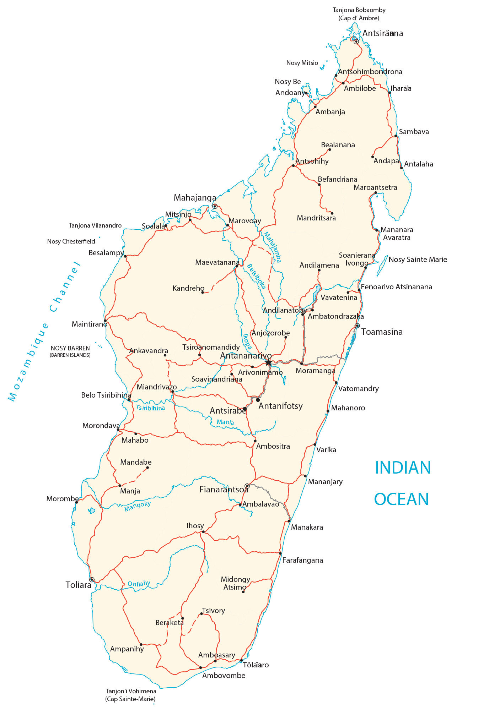

Madagascar is an island in Southern Africa in the Indian Ocean. It’s 430 km (267 mi) in distance from Madagascar to Mozambique on mainland Africa. Its coastline is 2,470 km (1,535 mi) with an area of 801,590 square kilometers (309,500 sq mi). Altogether, this makes it the fourth largest island in the world. Maputo is the capital and largest city. But other major cities are Nampula, Beira, and Chimoio.
The geography of Madagascar is varied and unique. The island is home to a wide variety of landscapes, from rainforests and mountains to beaches and coral reefs. Madagascar is also home to a number of endemic species, meaning that they are found nowhere else in the world. This makes the island a hotspot for biodiversity.
Go back home